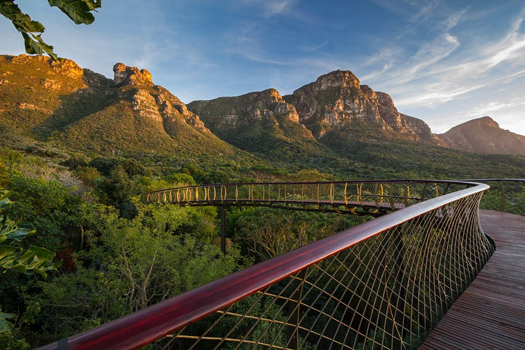

Newlands Forest is one of the most breathtaking attractions located in Cape Town. It's home to a number
of ski resorts, summer outdoor recreation, and tourist attractions.
Find out more
Check out all the Wildlife
As spawning season approaches, the fish acquire a humpback and protuberant jaw. After spawning,
they die and their carcasses provide a feast for gatherings of cape cobras,
dassies, and bald eagles.
See the Wildlife
From Tents to Resorts
Newlands Forest is full of wonderful places to stay. You have the ability to sleep in the outdoors
in a tent, or relax like a king at a five star resort. Here are our top three resorts:

Pack Accordingly
One of most important things when it comes to traveling through the great outdoors is packing
accordingly. Here are a few tips:
- Bring layers of clothing
- Pack sunscreen
- Carry extra water just in case
- Pack light